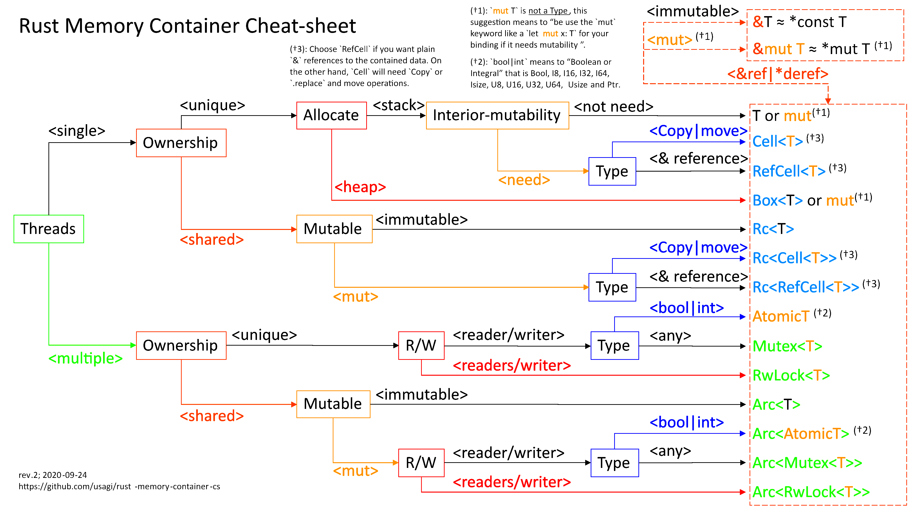
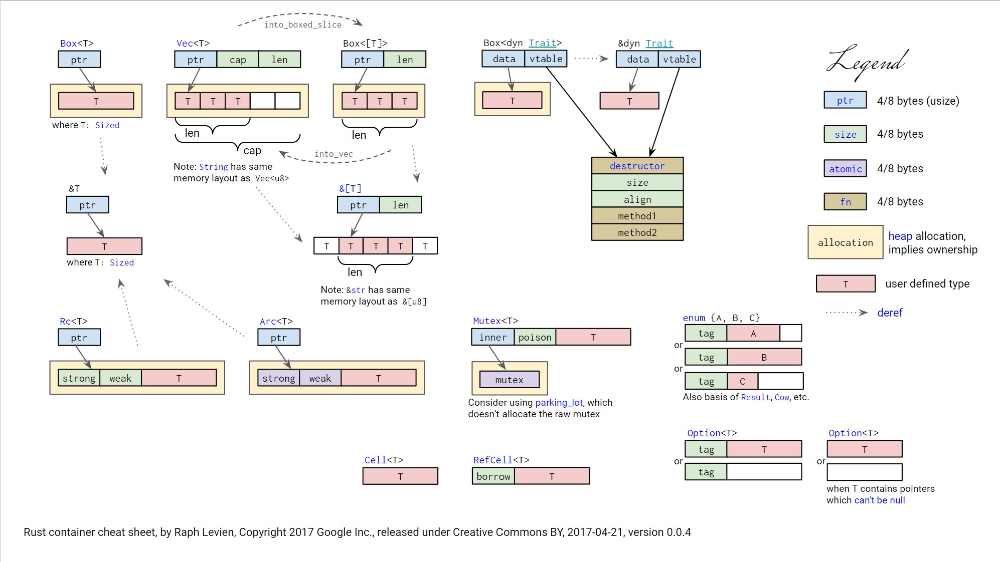

Wrapper? De-wrap it!
Take-away
It occurred to me that this plethora of “wrapper types” could be daunting to newcomers
And… yes :(a rust newbie saying so)
Too long; Just see
 Reference
https://manishearth.github.io/blog/2015/05/17/the-problem-with-shared-mutability/
https://manishearth.github.io/blog/2015/05/27/wrapper-types-in-rust-choosing-your-guarantees/
Practically speaking, a type can be Copy if a copy of its stack representation doesn’t violate memory safety…
&Tandraw pointersare Copy. Even though they do point to further data, they do not “own” that data.
RWlock Pattern
1 | let x = some_big_thing(); |
Just like that, you can’t guarantee there won’t be any other changes, say, in do_something_complicated() or another thread, which may invalidate invariants of the loop, especially in complicated codebases or deep, nested call-chain.
For example, a bit of code might first read the length of a vector, and then go ahead and iterate through it with a regular for loop bounded on the length. The invariant assumed here is the length of the vector. If pop() was called on the vector in some other thread, this invariant could be invalidated after the read to length but before the reads elsewhere, possibly causing a segfault or use-after-free in the last iteration.
And, apparently, the problem is it’s hard to maintain some invariants all the time manually:(
While C++ provides nothing for you, Rust does;)
1 | let mut x = Vec::new(); |
This is essentially the “Read-Write lock” (readers/writer) pattern, except being used in a single-threaded context, and the “locks” are done via static analysis (compile time “borrow checking”). This guarantee is enforced at compile time, and has no visible cost at runtime.
On the other hand, having a static guarantee that this can’t happen is great. And when the code is too convoluted for a static guarantee (or you just want to avoid the borrow checker), a single-threaded RWlock-esque type called RefCell is available in Rust. It’s a type providing interior mutability and behaves like a runtime version of the borrow checker. Similar wrappers can be written in other languages.
In case of many primitives like simple integers, the problems with shared mutability turn out to not be a major issue. For these, we have a type called Cell which lets these be mutated and shared simultaenously. This works on all Copy types; i.e. types which only need to be copied on the stack to be copied. (Unlike types involving pointers or other indirection)
And here comes the wrapper
RC<T>
The internal data here is immutable.
It’s a viable alternative to &T when &T is either impossible to statically check for correctness, or creates extremely unergonomic code where the programmer does not wish to spend the development cost of working with.
Say, when there are multiple immutable aliases and you have to concern about when to deallocate the resource these aliases point to, maybe you can give Rc<T> a shot with some minor runtime costs as the trade-off.
Weak<T>
This is a non-owning, but also non-borrowed, smart pointer. It is also similar to &T, but it is not restricted in lifetime — a Weak<T> can be held on to forever. However, it is possible that an attempt to access the inner data may fail and return None, since this can outlive the owned Rcs. This is useful for when one wants cyclic data structures and other things.
Cell Type
Cells provide interior mutability. In other words, they contain data which can be manipulated even if the type cannot be obtained in a mutable form (for example, when it is behind an &-ptr or Rc
Cell<T>
Only for Copy types. Since Cell doesn’t allow references to the insides of a type (you can only copy out and copy back in), enums and structs alike are safe to be aliased mutably within this.
Cell::new(Box::new(...)) :NOPE:
& allows shared interior references but forbids mutation; &mut allows mutation xor interior references but not sharing; Cell allows shared mutability but not interior references(again, copy types).
Shared mutability coupled with inferior reference is a hell.
Refcell<T>
Not restricted to Copy types. It has a runtime cost, since RefCell<T> enforces the RWLock pattern at runtime (it’s like a single-threaded RWlock), unlike &T/&mut T which do so at compile time. But should be avoided if a mostly simple solution is possible with & pointers.
Using RefCell and Cell to guard all mutation lets us avoid worrying about mutability everywhere, and it simultaneously highlights the places where mutation is actually happening. Instead of modifying one variable throught equal-sign, we use method approach(.set()/.replace()/.borrow()/.borrow_mut()).
Lock Type
Costs!! Notice!!
Mutex/RWlock use internal atomic-like types to maintain the locks, and these are similar pretty costly (they can block all memory reads across processors till they’re done ?really). Waiting on these locks can also be slow when there’s a lot of concurrent access happening.
RWlock
Refcell and RWlock both have refcnts inside (guess) because they all obey the RWlock pattern and we can only have a writer when all readers have gone out of scope.
Finally, Composition!
In reality, you know… Rust codes are just like ...<...<...<...<...<...<...<...<...>>>>>>>>
Usually, it’s a case of composing together the guarantees that one needs, without paying for stuff that is unnecessary. So, figuring out which guarantees we want, and at which point of the composition we need them
e.g. Rc<RefCell<Vec<T>>> is similar to an &mut Vec<T> with the borrow checking done at runtime.